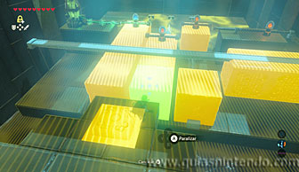

Puedes entrar en este santuario desde que llegas a la región de la torre del cañón. Se encuentra situado al sudoeste del mapa, justo debajo de un gran esqueleto de dragón.
Para llegar a él tienes que atravesar una zona de tormenta de arena, hazlo en morsa para recorrer la distancia a más velocidad.
Al llegar al esqueleto la tormenta parará y podrás ver la entrada al santuario y una fuente de la gran hada enfrente de ella.
Dentro del santuario tendrás que usar el módulo Imán frecuentemente. Para empezar junta los dos bloques de metal en el centro para que al unirse abran la puerta. Puedes hacerlo como mejor te parezca, colocarlos cada uno junto a los dos postes que hay en el centro o incluso poniéndolos sobre ellos. Siempre que se toquen y la electricidad llegue al interruptor servirá.
En la siguiente sala tendrás que acercar la esfera con la cadena al interruptor que hay junto al ascensor parado. Si la pones junto a él, el ascensor comenzará a funcionar. Ten en cuenta que la esfera no llega hasta su objetivo si antes no la desenredas de la columna.
Ahora podrás subir con el ascensor y continuar el camino por arriba. Sin embargo, antes de subir puedes abrir un cofre que contiene un núcleo ancestral. Para ello mira a la zona de agua y localiza el cofre bajo ella. Usa de nuevo el imán para sacarlo de allí.
Después sube y eleva la esfera para poder pasar por encima de los interruptores sin tocarlos. Si activas alguno, se activará también alguna trampa (salen enemigos o la plataforma por donde avanzas se mueve para hacerte caer).
Si antes de llegar al final, depositas la esfera en el pedestal que hay en la pared del lado derecho abrirás un camino que te lleva a un cofre. Dentro puedes encontrar una rupia dorada.
Regresa al pasillo anterior y vuelve a coger la esfera para dejarla en el pedestal del fondo. Entonces verás como una rueda dentada se pone en movimiento. Ahora tendrás que encontrar otra rueda que complete el engranaje.
Sigue por el camino de la derecha y llegarás a un interruptor en el suelo que cuando lo pisas hace mover varios bloques delante. Si te fijas, verás que también aquí tienes que completar un circuito. Hay varias formas de hacerlo, pero la más sencilla es que paralices el bloque más cercano a ti del grupo del centro, justo en el momento que esté más cerca de ti (sin pisar el interruptor). Después pisa el interruptor para que todos los bloques se muevan al fondo (excepto el que está paralizado) y rápidamente mueve el bloque de metal que está sujeto a un rail con el módulo Imán. El objetivo es cortar el paso a los dos grupos de bloques de la derecha.

Ahora, al dejar de pisar el interruptor y caigan los bloques hacia ti, quedarán alineados y el circuito se completará. Date la vuelta y verás una rueda dentada que puedes coger con el módulo Imán. Detrás de ella hay un cofre que contiene un zafiro.
Llévate la rueda con el módulo Imán a la sala anterior y colócala junto a las otras dos ruedas que hay en la pared. Así conseguirás abrir la puerta hacia el altar.
Ahora camina al altar para conseguir el símbolo de valía correspondiente.